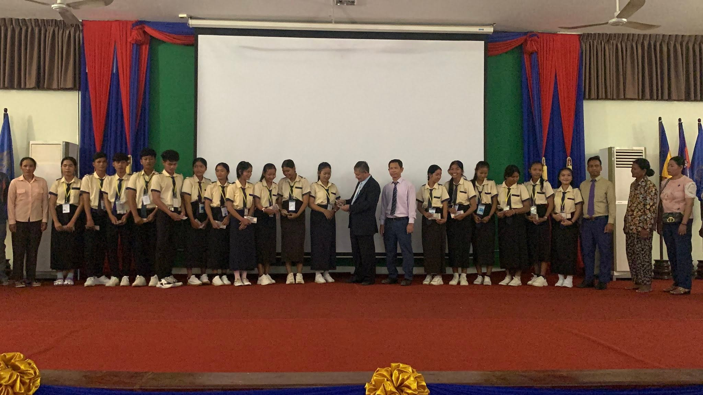

កិច្ចព្រមព្រៀងរវាងរាជរដ្ឋាភិបាលនៃព្រះរាជាណាចក្រកម្ពុជា និងសហភាពអឺរ៉ុប ត្រូវបានចុះហត្ថលេខា នៅឆ្នាំ២០២៤ ក្នុងក្របខណ្ឌគម្រោងហិរញ្ញប្បទានឥតសំណង តាមរយៈមូលនិធិសុខដុមនីយកម្មរបស់ រាជរដ្ឋាភិបាល ដែលគាំទ្រដោយសហភាពអឺរ៉ុប សម្រាប់ការអនុវត្តកម្មវិធីភាពជាដៃគូសហភាពអឺរ៉ុប-កម្ពុជា លើបរិវត្តកម្មអប់រំបច្ចេកទេស ២០២៤-២០២៧។ កម្មវិធីនេះ ផ្តោតលើការបង្កើនសមធម៌នៃការចូលរៀនលើ មុខជំនាញពាក់ព័ន្ធនឹងការអប់រំស្លែម (STEM, Science, Technology, Engineering and Mathematics) នៅ ឧត្តមសិក្សា ដោយផ្តល់អាហារូបករណ៍ពេញលេញលើការបង់ថ្លៃសិក្សា និងថវិកាឧបត្ថម្ភប្រចាំខែ ដល់អ្នក សិក្សាក្នុងអំឡុងពេលកំពុងសិក្សា ចំនួន៥០០នាក់ សម្រាប់០២ជំនាន់ លើកម្រិតបរិញ្ញាបត្រ រយៈពេល ៤ឆ្នាំ។ ក្រសួងអប់រំ យុវជន និងកីឡា ជាភ្នាក់ងារអនុវត្តកម្មវិធីជាមួយនឹងគ្រឹះស្ថានសិក្សាគោលដៅក្រោមឱវាទក្រសួង។
គោលការណ៍ណែនាំនេះ មានគោលបំណងណែនាំអំពីលក្ខខណ្ឌ នីតិវិធីនៃការជ្រើសរើស និងការ គ្រប់គ្រងដំណើរការនៃកម្មវិធីផ្តល់អាហារូបករណ៍កម្រិតបរិញ្ញាបត្រនៅ តាមគ្រឹះស្ថានឧត្តមសិក្សាសាធារណៈចំនួន១០ ក្រោមឱវាទក្រសួងអប់រំ យុវជន និងកីឡា ក្នុងក្របខណ្ឌ គម្រោងកម្មវិធីភាពជាដៃគូសហភាពអឺរ៉ុប-កម្ពុជា លើបរិវត្តកម្មអប់រំបច្ចេកទេស ២០២៤ -២០២៧។
កម្មវិធីផ្តល់អាហារូបករណ៍នេះ មានគោលដៅផ្តល់អាហារូបករណ៍ដល់និស្សិតលើមុខជំនាញស្ទែម រួម បញ្ចូលទាំងមុខវិជ្ជាពាក់ព័ន្ធនឹង សវនកម្មថាមពល, ថាមពល, និងកសិកម្មប្រកបដោយនិរន្តរភាព សម្រាប់ ការអនុវត្តកម្មវិធីភាពជាដៃគូសហភាពអឺរ៉ុប-កម្ពុជា លើបរិវិត្តកម្មអប់រំបច្ចេកទេស ក្នុងការបង្កើនសមធម៌នៃ ការចូលរៀននៅឧត្តមសិក្សា ដូចខាងក្រោម៖ ១. បង្កើនឱកាសដល់សិស្ស ជាពិសេសបេក្ខភាពជានារី ដែលបានបញ្ចប់មធ្យមសិក្សាអប់រំបច្ចេកទេស ឬសញ្ញាបត្រមានតម្លៃស្មើ បន្តការសិក្សាលើមុខជំនាញពាក់ព័ន្ធផ្នែកស្ទែម នៅកម្រិតបរិញ្ញាបត្រ ២. កាត់បន្ថយអត្រាបោះបង់ការសិក្សារបស់និស្សិតនៅឧត្តមសិក្សា តាមរយៈការផ្តល់ថវិកាឧបត្ថម្ភប្រចាំខែ ដល់និស្សិតក្នុងអំឡុងពេលកំពុងសិក្សា ៣. បង់ថ្លៃសិក្សាដល់គ្រឹះស្ថានឧត្តមសិក្សាដែលមាននិស្សិតជាប់អាហារូបករណ៍ តាមកម្មវិធី មុខជំនាញ និងកម្រិតបណ្តុះបណ្តាល ៥. អនុវត្តសាកល្បងសេចក្តីណែនាំលេខ៧០ អយក.សណន ចុះថ្ងៃទី០៥ ខែធ្នូ ឆ្នាំ២០២៤ ស្តីពី កម្មវិធីពន្លឿនតាមរយៈការផ្ទេរ និងទទួលស្គាល់ក្រេឌីតសិក្សារបស់សិស្សមានសញ្ញាបត្រ បច្ចេកទេសនិងវិជ្ជាជីវៈ៣ បន្តការសិក្សាកម្រិតបរិញ្ញាបត្រនៅសាកលវិទ្យាល័យជាតិ ជាស៊ីម កំចាយមារ លើមុខជំនាញពាក់ព័ន្ធនឹងកុំព្យូទ័រ ។
ក្នុងការចាប់ផ្តើមដំបូងនៃគម្រោង គ្រឹះស្ថានឧត្តមសិក្សាសាធារណៈ ចំនួន១០ ក្រោមឱវាទក្រសួង អប់រំ យុវជន និងកីឡា ចូលរួមអនុវត្ត ក្នុងការទទួលនិស្សិតឱ្យចូលរៀន តាមការកំណត់របស់គម្រោងកម្មវិធី អាហារូបករណ៍និស្សិតផ្នែកស្ទែមនិងកសិកម្ម នៅឧត្តមសិក្សា លើកម្រិតបរិញ្ញាបត្រ ក្រោមមូលនិធិសុខដុមនីយកម្មររបស់រាជរដ្ឋាភិបាល ដែលគាំទ្រដោយសហភាពអឺរ៉ុប និង ក្រោមការសម្របសម្រួល របស់អគ្គនាយកដ្ឋានឧត្តមសិក្សា ។
អាហារូបករណ៍ក្រោមក្របខណ្ឌគម្រោងកម្មវិធីភាពជាដៃគូសហភាពអឺរ៉ុប-កម្ពុជា លើបរិវត្តកម្ម អប់រំបច្ចេកទេស ២០២៤-២០២៧នេះ ផ្តល់អាទិភាពដល់បេក្ខជនដែលមានលក្ខខណ្ឌដូចខាងក្រោម៖ សម្រាប់កម្រិតបរិញ្ញាបត្រ៖
ការផ្តល់អាហារូបករណ៍នេះ ត្រូវអនុលោមទៅតាមលក្ខខណ្ឌនៃការប្រឡងជ្រើសរើសដែលបាន កំណត់ដោយក្រសួងអប់រំ យុវជន និងកីឡា ដោយមានការសម្របសម្រួលបច្ចេកទេសពីអគ្គនាយកដ្ឋាន-ឧត្តមសិក្សា និងគ្រឹះស្ថានឧត្តមសិក្សាសាមី ។ អាហារូបករណ៍កម្រិតបរិញ្ញាបត្រនេះ នឹងផ្តល់ជូនដល់បេក្ខជន ដែលពុំទាន់ទទួលបានអាហារូបករណ៍របស់ក្រសួងអប់រំ យុវជន និងកីឡា និង/ឬ អាហារូបករណ៍ដទៃ ទៀតក្នុងកំឡុងពេលដាក់ពាក្យស្នើសុំអាហារូបករណ៍ + កម្រិតបរិញ្ញាបត្រ៖ បេក្ខជនត្រូវគោរពតាមលក្ខខណ្ឌដូចខាងក្រោម៖
សំណុំឯកសារដែលបេក្ខជនត្រូវបំពេញ និងភ្ជាប់មកជាមួយរួមមាន ៖ ៣.១. កម្រិតបរិញ្ញាបត្រ
កិច្ចព្រមព្រៀងរវាងរាជរដ្ឋាភិបាលនៃព្រះរាជាណាចក្រកម្ពុជា និងសហភាពអឺរ៉ុប ត្រូវបានចុះហត្ថលេខា នៅឆ្នាំ២០២៤ ក្នុងក្របខណ្ឌគម្រោងហិរញ្ញប្បទានឥតសំណង តាមរយៈមូលនិធិសុខដុមនីយកម្មរបស់ រាជរដ្ឋាភិបាល ដែលគាំទ្រដោយសហភាពអឺរ៉ុប សម្រាប់ការអនុវត្តកម្មវិធីភាពជាដៃគូសហភាពអឺរ៉ុប-កម្ពុជា លើបរិវត្តកម្មអប់រំបច្ចេកទេស ២០២៤-២០២៧។ កម្មវិធីនេះ ផ្តោតលើការបង្កើនសមធម៌នៃការចូលរៀនលើ មុខជំនាញពាក់ព័ន្ធនឹងការអប់រំស្លែម (STEM, Science, Technology, Engineering and Mathematics) នៅ ឧត្តមសិក្សា ដោយផ្តល់អាហារូបករណ៍ពេញលេញលើការបង់ថ្លៃសិក្សា និងថវិកាឧបត្ថម្ភប្រចាំខែ ដល់អ្នក សិក្សាក្នុងអំឡុងពេលកំពុងសិក្សា ចំនួន៥០០នាក់ សម្រាប់០២ជំនាន់ លើកម្រិតបរិញ្ញាបត្រ រយៈពេល ៤ឆ្នាំ។ ក្រសួងអប់រំ យុវជន និងកីឡា ជាភ្នាក់ងារអនុវត្តកម្មវិធីជាមួយនឹងគ្រឹះស្ថានសិក្សាគោលដៅក្រោមឱវាទក្រសួង។
គោលការណ៍ណែនាំនេះ មានគោលបំណងណែនាំអំពីលក្ខខណ្ឌ នីតិវិធីនៃការជ្រើសរើស និងការ គ្រប់គ្រងដំណើរការនៃកម្មវិធីផ្តល់អាហារូបករណ៍កម្រិតបរិញ្ញាបត្រនៅ តាមគ្រឹះស្ថានឧត្តមសិក្សាសាធារណៈចំនួន១០ ក្រោមឱវាទក្រសួងអប់រំ យុវជន និងកីឡា ក្នុងក្របខណ្ឌ គម្រោងកម្មវិធីភាពជាដៃគូសហភាពអឺរ៉ុប-កម្ពុជា លើបរិវត្តកម្មអប់រំបច្ចេកទេស ២០២៤ -២០២៧។
កម្មវិធីផ្តល់អាហារូបករណ៍នេះ មានគោលដៅផ្តល់អាហារូបករណ៍ដល់និស្សិតលើមុខជំនាញស្ទែម រួម បញ្ចូលទាំងមុខវិជ្ជាពាក់ព័ន្ធនឹង សវនកម្មថាមពល, ថាមពល, និងកសិកម្មប្រកបដោយនិរន្តរភាព សម្រាប់ ការអនុវត្តកម្មវិធីភាពជាដៃគូសហភាពអឺរ៉ុប-កម្ពុជា លើបរិវិត្តកម្មអប់រំបច្ចេកទេស ក្នុងការបង្កើនសមធម៌នៃ ការចូលរៀននៅឧត្តមសិក្សា ដូចខាងក្រោម៖ ១. បង្កើនឱកាសដល់សិស្ស ជាពិសេសបេក្ខភាពជានារី ដែលបានបញ្ចប់មធ្យមសិក្សាអប់រំបច្ចេកទេស ឬសញ្ញាបត្រមានតម្លៃស្មើ បន្តការសិក្សាលើមុខជំនាញពាក់ព័ន្ធផ្នែកស្ទែម នៅកម្រិតបរិញ្ញាបត្រ ២. កាត់បន្ថយអត្រាបោះបង់ការសិក្សារបស់និស្សិតនៅឧត្តមសិក្សា តាមរយៈការផ្តល់ថវិកាឧបត្ថម្ភប្រចាំខែ ដល់និស្សិតក្នុងអំឡុងពេលកំពុងសិក្សា ៣. បង់ថ្លៃសិក្សាដល់គ្រឹះស្ថានឧត្តមសិក្សាដែលមាននិស្សិតជាប់អាហារូបករណ៍ តាមកម្មវិធី មុខជំនាញ និងកម្រិតបណ្តុះបណ្តាល ៥. អនុវត្តសាកល្បងសេចក្តីណែនាំលេខ៧០ អយក.សណន ចុះថ្ងៃទី០៥ ខែធ្នូ ឆ្នាំ២០២៤ ស្តីពី កម្មវិធីពន្លឿនតាមរយៈការផ្ទេរ និងទទួលស្គាល់ក្រេឌីតសិក្សារបស់សិស្សមានសញ្ញាបត្រ បច្ចេកទេសនិងវិជ្ជាជីវៈ៣ បន្តការសិក្សាកម្រិតបរិញ្ញាបត្រនៅសាកលវិទ្យាល័យជាតិ ជាស៊ីម កំចាយមារ លើមុខជំនាញពាក់ព័ន្ធនឹងកុំព្យូទ័រ ។
ក្នុងការចាប់ផ្តើមដំបូងនៃគម្រោង គ្រឹះស្ថានឧត្តមសិក្សាសាធារណៈ ចំនួន១០ ក្រោមឱវាទក្រសួង អប់រំ យុវជន និងកីឡា ចូលរួមអនុវត្ត ក្នុងការទទួលនិស្សិតឱ្យចូលរៀន តាមការកំណត់របស់គម្រោងកម្មវិធី អាហារូបករណ៍និស្សិតផ្នែកស្ទែមនិងកសិកម្ម នៅឧត្តមសិក្សា លើកម្រិតបរិញ្ញាបត្រ ក្រោមមូលនិធិសុខដុមនីយកម្មររបស់រាជរដ្ឋាភិបាល ដែលគាំទ្រដោយសហភាពអឺរ៉ុប និង ក្រោមការសម្របសម្រួល របស់អគ្គនាយកដ្ឋានឧត្តមសិក្សា ។
បេក្ខជនដែលបានជាប់អាហារូបករណ៍ចូលរៀននៅតាមគ្រឹះស្ថានឧត្តមសិក្សាត្រូវ៖
បេក្ខជនដែលបានជាប់អាហារូបករណ៍ចូលរៀននៅតាមគ្រឹះស្ថានឧត្តមសិក្សា កម្រិតបរិញ្ញាបត្រ ត្រូវគោរពតាមលក្ខខណ្ឌដូចខាងក្រោម៖
អនុក្រឹត្យនេះមានគោលបំណងកំណត់អាហារូបករណ៍និងប្រាក់ឧបត្ថម្ភប្រចាំខែចំពោះអ្នកសិក្សា ដើម្បីទំនុកបម្រុងការសិក្សាក្នុងរយៈពេលកំពុងរៀនសូត្រ។
អនុក្រឹត្យនេះមានគោលដៅ៖
អាហារូបករណ៍ប្រចាំខែរបស់សិស្សនិងនិស្សិតដែលបណ្តុះបណ្តាលនៅឧត្តមសិក្សានិងសិក្សាឯកទេសសាធារណៈ ត្រូវកំណត់តាមកម្រិតដូចខាងក្រោម
ចំនួនសិស្សនិងនិស្សិតដែលទទួលអាហារូបករណ៍ ត្រូវកំណត់ដូចតទៅ៖
ចំពោះសិស្សនិងនិស្សិត ដែលទទួលការបណ្តុះបណ្តាលមុខជំនាញដែលរាជរដ្ឋាភិបាលកំណត់ ថាជាមុខជំនាញអាទិភាព ឬមុខជំនាញចាំបាច់សម្រាប់សង្គម ដូចជាកីឡានិងគ្រូបង្រៀនគ្រប់កម្រិត ត្រូវទទួលអាហារូបករណ៍មួយរយភាគ រយ។
ការផ្តល់អាហារូបករណ៍ប្រចាំខែ ត្រូវអនុវត្តតែក្នុងរយៈពេលកំពុងសិក្សា។ ពេលឈប់សម្រាក ក្នុងឱកាសមហាវិស្សមកាលនិងពេលព្យួរការសិក្សា សិស្សនិងនិស្សិតមិនត្រូវបានទទួលប្រាក់ អាហារូបករណ៍ឡើយ។ ក្នុងករណីសិស្ស និស្សិតដែលរៀនត្រួតថ្នាក់ រដ្ឋនឹងផ្តាច់អាហារូបករណ៍វិញ លើកលែងតែ គរុសិស្សនិងគរុនិស្សិត។
ការផ្តល់អាហារូបករណ៍ ត្រូវអនុវត្តតាមគោលការណ៍អាទិភាព ដូចខាងក្រោម៖
ក្នុងអាទិភាពទាំង៤ខាងលើ នារីភេទត្រូវបានយកចិត្តទុកដាក់មុនគេ។
ថ្ងៃពុធ ១៤រោច ខែកត្តិក ឆ្នាំម្សាញ់ សប្តស័ក ពុទ្ធសករាជ ២៥៦៩ ត្រូវនឹងថ្ងៃទី១៩ ខែវិច្ឆិកា ឆ្នាំ២០២៥ វិទ្យាស្ថានអភិវឌ្ឍន៍សហគមន៍នៃសាកលវិទ្យាល័យជាតិជាស៊ីមកំចាយមារ បានរៀបចំពិធីបើកអាហារូបករណ៍ជូនដល់សិស្សានុសិស្សថ្នាក់អប់រំបច្ចេកទេស សរុបចំនួន ១៥១ នាក់ ក្នុងម្នាក់ៗទទួលនូវថវិកាចំនួនសរុប ២៥០,០០០ រៀលគត់ ដែលមានរយ:ពេលសរុប ៥ខែ គឺចាប់ពីខែមេសា-សីហា ឆ្នាំ២០២៥

ថ្ងៃព្រហស្បតិ៍ ៩រោច ខែជេស្ឋ ឆ្នាំម្សាញ់ សប្តស័ក ពុទ្ធសករាជ ២៥៦៩ ត្រូវនឹងថ្ងៃទី១៩ ខែមិថុនា ឆ្នាំ២០២៥ ។វិទ្យាស្ថានអភិវឌ្ឍន៍សហគមន៍នៃសាកលវិទ្យាល័យជាតិជាស៊ីមកំចាយមារ បានរៀបចំពិធីបើកអាហារូបករណ៍ជូនដល់សិស្សានុសិស្សសរុបចំនួន ១៥១ នាក់ និងវត្តមាន មាតា-បិតា អាណាព្យាលបាលសិស្សអញ្ជើញចូលរួមសរុប ១៣០ នាក់ និងលោកគ្រូ អ្នកគ្រូដែលបង្រៀននៅវិទ្យាស្ថានទាំងអស់ សរុបចំនួនអ្នកចូលរួម ២៩៧ នាក់។ ហើយសិស្សានុសិស្ស ទទួលបានប្រាក់អាហារូបករណ៍ក្នុងម្នាក់ៗ ចំនួនសរុប ២៥០,០០០ រៀល (ស្មើនឹង ៥០,០០០/១ខែ) ដែលមានរយ:ពេលសរុប ៥ខែ។
